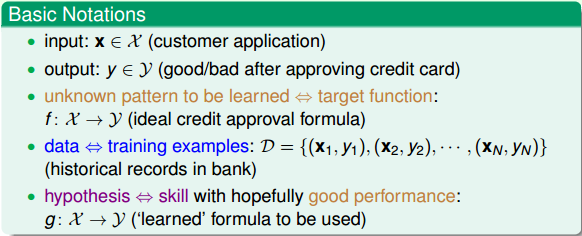

# What is Machine Learning
什麼是 “學習”？ 學習就是人類通過觀察、積累經驗，掌握某項技能或能力。就好像我們從小學習識別字母、認識漢字，就是學習的過程。而機器學習（Machine Learning），顧名思義，就是讓機器（電腦）也能向人類一樣，通過觀察大量的資料和訓練，發現事物規律，獲得某種分析問題、解決問題的能力。
機器學習可以被定義為： Improving some performance measure with experence computed from data. 也就是機器從資料中總結經驗，從資料中找出某種規律或者模型，並用它來解決實際問題。
什麼情況下會使用機器學習來解決問題呢？其實，目前機器學習的應用非常廣泛，基本上任何場合都能夠看到它的身影。其應用場合大致可歸納為三個條件：
- 事物本身存在某種潛在規律
- 某些問題難以使用普通程式設計解決
- 有大量的資料樣本可供使用
# Applications of Machine Learning
機器學習在我們的衣、食、住、行、教育、娛樂等各個方面都有著廣泛的應用，我們的生活處處都離不開機器學習。比如，打開購物網站，網站就會給我們自動推薦我們可能會喜歡的商品；電影頻道會根據使用者的流覽記錄和觀影記錄，向不同使用者推薦他們可能喜歡的電影等等，到處都有機器學習的影子。
# Components of Machine Learning
本系列的課程對機器學習問題有一些基本的術語需要注意一下：
- 輸入
x - 輸出
y - 目標函數
f，即最接近實際樣本分佈的規律 - 訓練樣本
data - 假設
hypothesis，一個機器學習模型對應了很多不同的hypothesis，通過演算法A，選擇一個最佳的hypothesis對應的函數稱為矩g，g能最好地表示事物的內在規律，也是我們最終想要得到的模型運算式。

實際中，機器學習的流程圖可以表示為：
對於理想的目標函數 f ，我們是不知道的，我們手上拿到的是一些訓練樣本 D ，假設是監督式學習，其中有輸入 x ，也有輸出 y 。機器學習的過程，就是根據先驗知識選擇模型，該模型對應的 hypothesis set （用 H 表示）， H 中包含了許多不同的 hypothesis ，通過演算法 A ，在訓練樣本 D 上進行訓練，選擇出一個最好的 hypothes ，對應的函數運算式 g 就是我們最終要求的。一般情況下， g 能最接近目標函數 f ，這樣，機器學習的整個流程就完成了。
# Machine Learning and Other Fields
與機器學習相關的領域有：
- 資料採擷（
Data Mining） - 人工智慧（
Artificial Intelligence） - 統計（
Statistics）
其實，機器學習與這三個領域是相通的，基本類似，但也不完全一樣。機器學習是這三個領域中的有力工具，而同時，這三個領域也是機器學習可以廣泛應用的領域，總得來說，他們之間沒有十分明確的界線。
# Conclusion
本節課主要介紹了什麼是機器學習，什麼樣的場合下可以使用機器學習解決問題，然後用流程圖的形式展示了機器學習的整個過程，最後把機器學習和資料採擷、人工智慧、統計這三個領域做個比較。本節課的內容主要是概述性的東西，比較簡單，所以筆記也相對比較簡略。